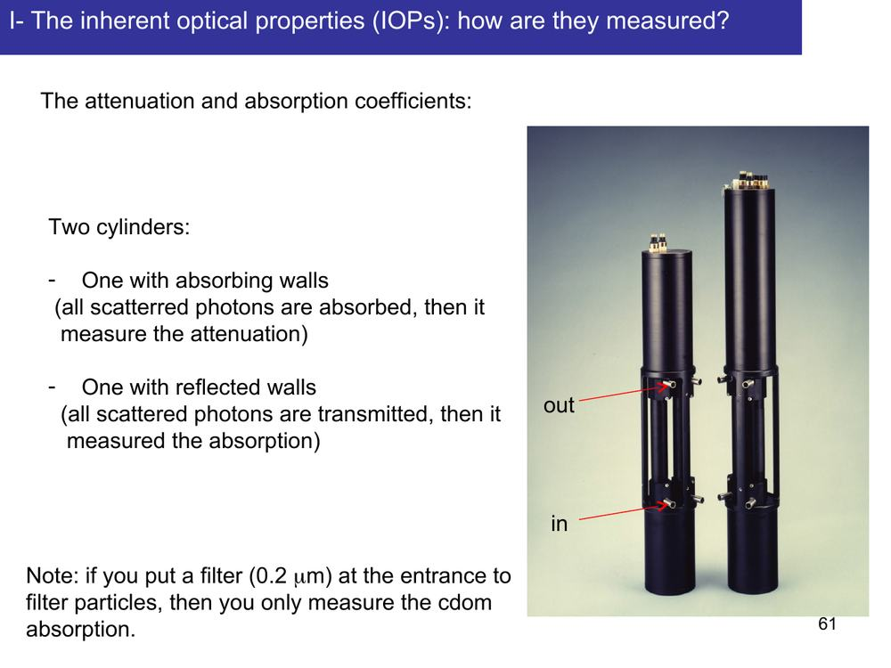
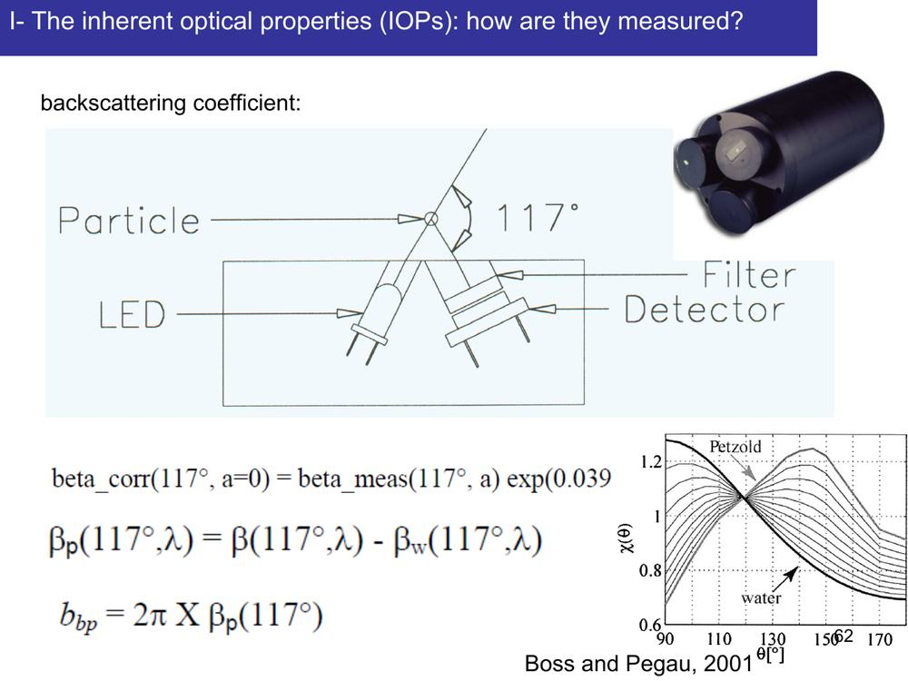

E · Measuring IOPs
Transmissometers, ac-type meters, backscattering sensors (slides 59–62)
Measuring the attenuation coefficient

Lecture slide 60
- Beam transmissometer (C-star)
- T = e−cL
- Scattered light reaches the detector
- Ideal acceptance angle 0° = no light
Beer–Lambert, symbol by symbol
Transmission versus attenuation

Own computation: T = exp(−cL) for three path lengths
Absorption and attenuation tubes

Lecture slide 61
- Absorbing walls → c
- Reflecting walls → a
- b = c − a
- 0.2 µm filter → CDOM only
Backscattering sensor

Lecture slide 62
- LED + detector, 117°
- βp = β − βw
- bbp = 2π χ βp(117°)
Backscattering retrieval, symbol by symbol
Instruments at a glance
| Quantity | Instrument | Main limit |
|---|---|---|
| c | Transmissometer | Acceptance angle |
| a | Reflecting-wall tube | Lost scattered photons |
| bbp | 117° sensor | χ and water subtraction |
| acdom | 0.2 µm filtered inlet | Particle leakage |
Rule
Every instrument sees only part of the light: always state its geometry (acceptance angle, 117°, wall type)Key points
- c from T = e−cL; a from reflecting tube
- b = c − a
- 0.2 µm filter: CDOM absorption only
- bbp = 2π χ βp(117°)